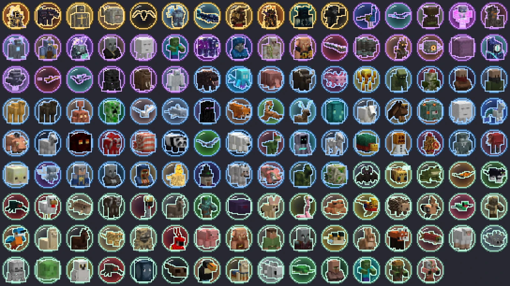
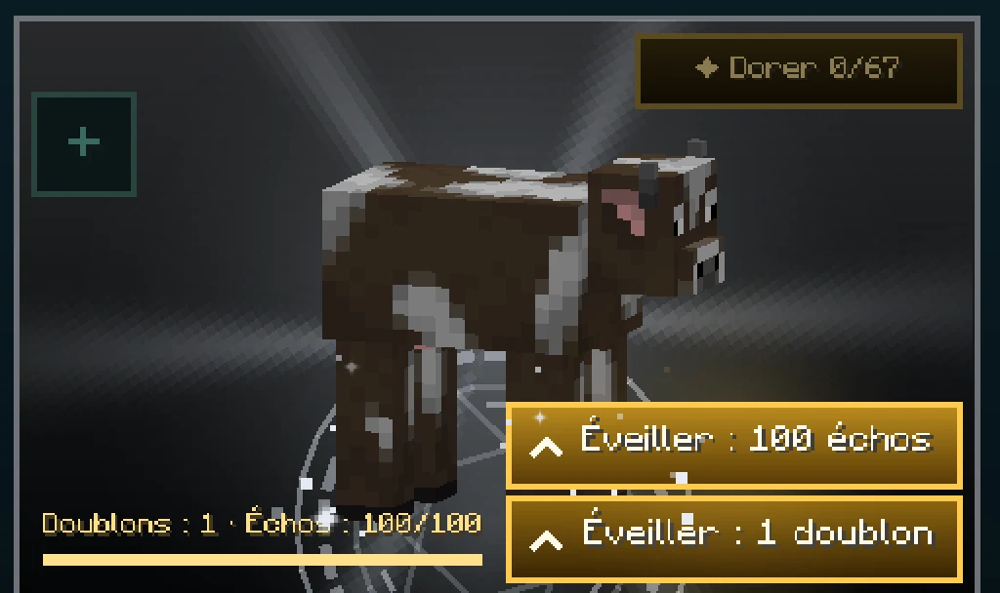
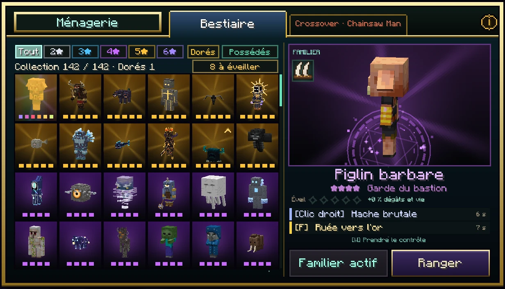
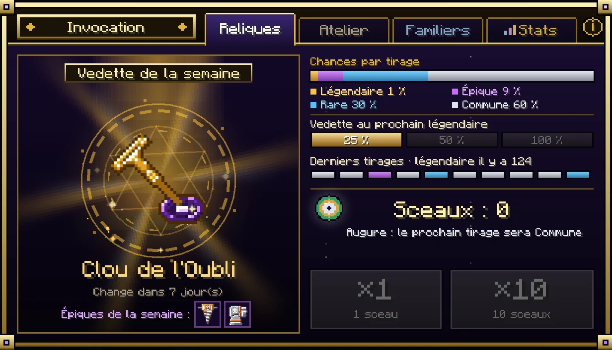

Familiers · depuis la 0.36
La Chasse
Les créatures du monde laissent désormais bien plus que leur butin : leur écho à chaque mort, des clés pour l'Ascension, et parfois l'or divin d'une créature dorée. Chasser nourrit vos familiers, votre Ascension et vos reliques.


(agrandir l'image)

(agrandir l'image)

(agrandir l'image)

(agrandir l'image)Les échos
Chaque créature du Bestiaire, de Minecraft comme d'Ebisu, laisse son écho à chaque fois que vous (ou votre familier) la tuez, et 10 échos quand elle est dorée. Les créatures sorties d'un générateur n'en laissent pas. Chaque écho est dessiné à l'image de sa créature : une sphère de verre d'âme où elle dort.
- Éveiller : dans la Ménagerie, 100 échos d'une créature éveillent d'un niveau votre familier de cette créature, exactement comme 1 doublon tiré sur la bannière. L'un ou l'autre, à vous de choisir : chaque bouton dit ce qu'il dépense, et s'affichent tous les deux quand les deux sont possibles.
- Il ne donne jamais le familier : un familier s'obtient sur la bannière Bestiaire, et seulement là. Les échos d'une créature que vous ne possédez pas restent des échos : à garder, à ranger, à donner à un ami.
Le Classeur d'échos
Il est offert à tous les joueurs au début du jeu (il se refait à l'établi : livre, deux cuirs, éclat d'améthyste, lingot d'or). Un vrai classeur à anneaux, ouvert d'un clic droit : neuf pochettes transparentes par feuille, une carte par créature du Bestiaire, des onglets sur le côté (tous, trouvés, manquants, par étoiles) et les feuilles qui tournent à la molette ou aux flèches. Une pochette vide attend encore son écho.
- Les échos que vous ramassez se rangent tout seuls dans le classeur. Ce qui est dedans compte comme porté pour l'éveil.
- Clic sur une carte : un écho en sort (Maj+clic : 64) et reste dans votre inventaire, pour le donner par exemple.
- Pour remettre des échos : le bouton Ranger en haut du classeur, ou un clic sur le classeur avec les échos en main.
| Sortes d'échos trouvées | Récompense |
|---|---|
| 10 | 3 orbes d'âme |
| 25 | 5 orbes d'âme, 1 poussière d'or divin |
| 50 | 8 orbes d'âme, 1 poussière d'or divin |
| 75 | 10 orbes d'âme, 2 poussières d'or divin |
| 100 | 15 orbes d'âme, 3 poussières d'or divin |
| 140 | 25 orbes d'âme, 5 poussières d'or divin |
Les créatures dorées
Une créature sauvage du Bestiaire sur 300 vient au monde dorée : l'or des familiers 6★ sur elle, un tintement qui s'entend de loin, des paillettes, son nom en or, et moitié plus de vie. Elle ne disparaît jamais d'elle-même. Tuée, elle laisse 10 échos, 10 fragments d'âme et une pincée de poussière d'or divin — une seule, quelle que soit l'arme, même avec Butin. Tout le serveur l'apprend.
À la Ménagerie, le rite doré dépense 67 poussières d'or divin pour rendre doré un familier que vous possédez : son 6★ divin, +50 % de dégâts et de vie, sans attendre le tirage doré à 0,1 %.
Les fragments d'âme des Contrées
Les créatures des Contrées, celles de l'overworld, laissent des fragments d'âme comme celles de Minecraft, et plus selon leur stature : 1 pour les oiseaux et les petites bêtes, 2 pour les brigands, l'aurochs, le cerf scintillant, le feu follet ou le rôdeur des tourbières, 3 pour le raptor, le yéti, le scorpion, le sylvain flétri et le golem de cristal, 4 pour le mammouth, 30 pour le Minotaure et 40 pour le Colosse. Les créatures de l'Astrelume et des planètes n'en laissent pas : les leurs sont les fragments de relique et les métaux. Les pèlerins et les gardes de village n'en laissent pas non plus.
Les clés de l'Ascension
| Clé | Nœuds | D'où elle vient |
|---|---|---|
| Os gravé ×2 | Palier 2 | 12 % des squelettes, vagabonds, embourbés, desséchés, squelettes wither, zombies, momies, noyés et zombies villageois tués par vous ou votre familier, y compris ceux des générateurs |
| Diamant noir | Palier 5 | 9 nodules de graphite : 12 % de tout monstre tué sous le niveau 0 de l'overworld |
| Essence sauvage ×3 | Palier 8 | 15 % des bêtes hostiles des Contrées (raptor, scorpion, yéti, sylvain, rôdeur, golem de cristal, brigands, feu follet), et 3 à 5 sur le Minotaure |
| Étoile du chasseur | Ultime | 4 essences sauvages, 2 os gravés, 2 diamants noirs et 1 écho de n'importe quelle créature, à l'établi. L'écho doit être dans l'inventaire : sortez-le du classeur d'un clic sur sa carte |
Passez le curseur sur un objet en jeu : son infobulle dit comment l'obtenir. La liste complète est dans Tous les objets.
Les outils du chasseur
| Objet | Fabrication | Effet |
|---|---|---|
| Cor de l'Aurochs | 3 cornes d'aurochs, lingot d'or, cuir | Sonné, votre familier peut être contrôlé tout de suite, quel que soit le reste de ses 5 minutes. Une fois par jour. |
| Œil d'Argus | Œil d'Argus, 2 plumes d'Argus, pépite d'or | Dans la fenêtre d'invocation, cliquez l'œil près de la bourse : le prochain tirage sur cette bannière est tiré tout de suite et sa rareté s'affiche. Rien ne peut le relancer : vous savez seulement s'il vaut la peine de tirer maintenant. |
| Cœur de cristal taillé | Cœur de golem de cristal, diamant, 2 éclats d'améthyste | Pris en main puis clic droit sur une relique de l'inventaire : relance tous ses affixes sauf le meilleur. |
| Braise de forge | Sur le Tyran de la Tour (1 à 2) | De même : porte l'affixe le plus faible d'une relique à son maximum. |
| Aiguillon | Dard de scorpion, fiole, œil d'araignée (×2) | Utilisé, enduit l'arme de l'autre main : ses 12 prochains coups empoisonnent. |
| Fil d'Ariane | Sur le Minotaure (1 à 2) | Tiré, il vous ramène là où vous êtes mort la dernière fois, même dans un autre monde. |
| Pousse de sylvain | Bois de cœur, 2 poudres d'os, pousse de chêne | Plantée, elle fait pousser cultures, pousses d'arbre et baies dans un rayon de 4 blocs. |
Les charmes des familiers
Chaque familier a une case de charme dans la Ménagerie, en haut à gauche de sa scène : un clic y met le premier charme de votre inventaire (celui qu'il portait vous revient), un clic sans charme l'enlève. Les éperons de raptor (4 griffes de raptor, cuir, lingot d'or) le font courir 15 % plus vite quand vous le contrôlez ; le bracelet d'Astérion, laissé par le Minotaure, le fait frapper 15 % plus fort.